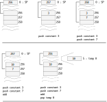
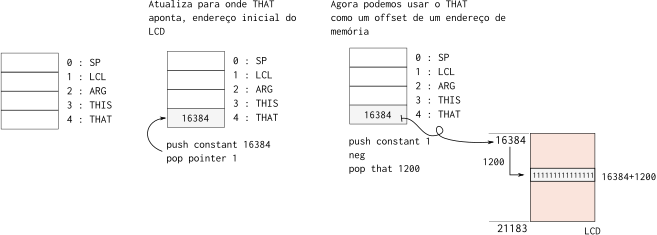

Lab 17 - vm¶
Nesse lab iremos criar programas em VM para o nosso Z01.1, essa entrega é individual e não vale nota, mas será cobrado em prova e servirá para vocês entenderem o próximo projeto: I-VMTranslator e será cobrado na ultima avaliação.
Módulos a serem implementados¶
Os módulos estão na pasta Projetos/H-VM/src/lab/ e estão organizados por ordem de dificuldade:
1a-Add.nasm1b-Add.nasm2a-Calculadora.nasm1c-Div.nasm2b-Calculadora.nasm2c-Calculadora.nasm2d-Calculadora.nasm
Para testar, basta editar o arquivo tests/config.txt com os módulos que deseja executar e então executar o script: testeVM.py localizado na pasta do projeto.
Exemplos
Existem diversos exemplos de programas escritos em linguagem VM, eles estão na pasta src/vmExamples/
Linguagem VM¶
A linguagem VM proposta para o curso é baseada em pilha (assim como tantas outras), as operações nesse nível não mais lidam com registradores do computador mas sim com dados que são colocados e tirados de uma pilha (stack). Uma grande vantagem disso é a abstração do hardware, agora não precisamos mais nos preocuparmos com a manipulação dos dados em baixo nível e saber por exemplo quantos registradores possuímos (o VMTranslator será encarregado disso). Um código escrito em VM passa pelas seguintes etapas antes de ser executado em máquina :
VMTranslator Assembler
.vm -------------> .nasm -------------> .hack
Com o código vm conseguimos implementar funções, o que facilita muito o desenvolvimento de qualquer software e prepara o terreno para conseguirmos implementar uma linguagem de alto nível.
O código vm é traduzido para linguagem nasm pelo VMTranslator (vocês vão ter que fazer parte desse programa no último projeto), e então é montado pelo Assembler para linguagem de máquina.
Temos diversas vantagens quando programamos em linguagem virtual :
a. Abstração de Hardware - (já não mais lidamos com o hardware diretamente) c. Portabilidade b. Código mais alto nível - (chamada de funções, linguagem mais próxima do que estamos acostumados, ...)
Pilha¶
A linguagem VM é baseada em pilha, ou seja, todas as operações que serão realizadas serão feitas na pilha. A pilha é uma região da memória RAM (no nosso caso começa no endereço 256 da memória RAM) reservada para armazenar os dados que estão sendo manipulados.
A pilha cresce conforme operações de push (envio de dados para a pilha) vão sendo executados, e decresce conforme operações cálculo ou de pull (retirar dados da pilha) são executadas.
A figura a seguir demonstra a evolução da pilha quando um programa em vm é executado:

- A pilha começa vazia e o Stack Pointer (SP) aponta para
256 - Uma operação de
push constant 3é executada, SP é incrementando e o valor 3 é colocado no topo da pilha - Uma operação de
push constant 7é executada, SP é incrementando e o valor 7 é colocado no topo da pilha - Adicionasse os dois valores no topo da pilha
add - Retira o valor do topo da pilha para o endereço de memória temporário
0.
Stack Pointer (SP)¶
O Stack Pointer é o endereço de memória (RAM[0]) reservado por apontar o topo da pilha, ou seja, a próxima posição vazia da pilha. O SP é salvo na RAM 0 (R0) e deve ser incrementado/decrementado conforme a pilha vai sendo manipulada.

Operações¶
Considerando a seguinte disposição na pilha :
...
...
X
Y
SP ->
São suportadas as seguintes operações aritméticas na pilha:
add- executa:
X + Y
- executa:
sub- executa:
X - Y
- executa:
neg- executa:
- Y(complemento de dois)
- executa:
eq- compara
X == Y- True : resulta em b"11111111111111111", 0xFFFF
- False: resulta em b"0000000000000000"", 0x0000
- compara
gt- compara
X > Y- True : resulta em b"11111111111111111", 0xFFFF
- False: resulta em b"0000000000000000"", 0x0000
- compara
lt- compara
X < Y- True : resulta em b"11111111111111111", 0xFFFF
- False: resulta em b"0000000000000000"", 0x0000
- compara
and- executa:
X and Y(bit a bit)
- executa:
or- executa:
X or Y(bit a bit)
- executa:
not- executa:
not Y(bit a bit)
- executa:
Note que as operações de comparação (eq, gt, lt) resulta em um True ou False e esse resultado é salvo na pilha. Considere o exemplo a seguir (em hexa) que possui inicialmente na pilha os valores 0x2, 0x3 e 0x5, após a operação de eq os valores 3 e 5 são comparados e resulta em um valor True ou False (0xFFFF ou 0x0000).
-> eq -> -> gt ->
0x2 0x2 0xFFFF
0x3 0x0 SP->
0x5 SP->
SP->
Warning
A pilha não é 'limpada' a cada operação, os endereços que não sofreram modificação dado uma operação continuam lá, mas você não pode considerar que eles são válidos! Se olharmos a memória real do exemplo anterior seria a seguinte:
-> eq -> -> gt ->
0x2 0x2 0xFFFF
0x3 0x0 SP-> 0x0
0x5 SP-> 0x5 0x5
SP-> 0x0 0x0 0x0
O mesmo acontece com arquivos que são deletados do seu computador, o sistema operacional não "limpa a memória" sempre que um arquivo é excluído, apenas apaga o ponteiro para aquele arquivo.
stackoverflow
Agora você consegue entender o significado do nome do site stack overflow? é um estouro na pilha (quando o tamanho da pilha ultrapassa a memória que está reservado para ela!)
Acesso a memória¶
Os comandos push e pop são a única maneira que temos de acessar/manipular a memória. O comando push traz para a pilha um valor da memória (RAM ou ROM) e o comando pop salva na memória um valor da pila (RAM). Os comandos possuem a seguinte sintaxe :
- push segment index
- pop segment index
Onde index é um número inteiro positivo e segment pode ser um dos casos a seguir:
| segment | Uso | Index | Comentário |
|---|---|---|---|
| argument | Local onde o argumento da função está salvo | 0 .. | Alocado dinamicamente pelo VMTranslator quando a função é chamada |
| local | Local das variáveis locais da função | 0 .. | Alocado dinamicamente pelo VMTranslator quando a função é chamada |
| static | Local onde as variáveis do objeto estão salvos | 0 .. | Essas variáveis são compartilhadas por todas as funções do mesmo .vm, assim como em um objeto |
| constant | Carrega uma constante na pilha | 0 .. 32767 | Mesmo uso do leaw (carrega da ROM um valor na RAM) |
| this/that | Segmentos de uso geral, pode apontar para qualquer lugar | 0 .. | Usado para ler e escrever de endereços da memória, por exemplo, acessar o LCD |
| pointer | Altera os valores do this e do that | 0, 1 | Usado para modificar a onde o this e o that apontam |
| temp | Local para uso de variáveis temporárias | 0 .. 7 | Acessado por qualquer função, é armazenado nos endereços R5 .. R12 da RAM |
Exemplo, acessando o temp¶
Por exemplo, para trazermos para a pilha uma constante realizamos a seguinte operação:
push constant 15
- nesse caso o segmento acessado é o constant e o parâmetro é o 15.
Para salvarmos o valor 15 no temp 3 (endereço da RAM 7), basta:
push constant 15
pop temp 3
Podemos também trazer o temp 3 para a pilha:
push temp 3
Programando
Implemente os programas a seguir e teste com testeVm.py.
Projetos/I-VM/src/vm/1a-AddProjetos/I-VM/src/vm/1b-AddProjetos/I-VM/src/vm/2a-Calculadora
Antes de Continuar
Só Continue após implementar e testar todos os programas!
Escrevendo um pixel no LCD¶
Para atualizarmos o LCD via VM será necessário primeiro atualizarmos para onde o that aponta, that é a maneira que possuímos de escrever em qualquer endereço da memória. O exemplo a seguir ilustra como usamos o segmento that para escrever nos pixels centrais do LCD, supondo que gostaríamos de realizar a seguinte operação em C.
int *pLCD = 16384
*(pLCD + 1200) = 0xFFFF
Nesse pequeno código em C o que está acontecendo é que primeiramente definimos um ponteiro pLCD que aponta para 16384, depois fazemos com que o endereço desse ponteiro + 1200 receba 0xFFFF, o mesmo código em VM é realizado da seguinte maneira :

push constant 16384 -- carrega 16384 para a pilha
pop pointer 1 -- atualiza para onde that aponta (int *pLCD = 16384)
push contant 1 -- carrega 1 para a pilha
neg -- nega o 1 para obter o valor 0xFFFF
-- poderia ter realizado o push contant 4095 no lugar
-- dessas duas operações
pop that 1200 -- faz com que o endereço da memória 16384 + 1200 = 0xFFFF
GOTO¶
Goto é a maneira de desviarmos uma execução em .vm, e possui a seguinte sintaxe:
- goto LABEL
- if-goto LABEL
podemos utilizar dois tipos :
- goto : incondicional , salta sem condição
- if-goto : condiconal, salta se o último valor da pilha for True
Exemplo: Salto para igual se 3 = 2
push constant 3
push constant 2
eq
if-goto IGUAL
..
..
label IGUAL
..
..
Exemplo: Contador utilizando for utilizando goto
// for(i=0; i<10; i++)
// x = x+1;
push constant 0
pop temp 0
push constant 1
pop temp 1
label LOOP_START
push temp 0
push constant 10
eq
if-goto END // se temp0 = 10 salta para o fim
push temp 0
push constant 1
add
pop temp 0
push temp 1
push temp 1
add
pop temp 1
goto LOOP_START // If counter > 0, goto LOOP_START
label END
labels¶
Os labels são definidos pela keyword label + nome :
- label nome
PROGRAMANDO¶
Implemente os programas a seguir e teste com testeVm.py.
Projetos/I-VM/src/vm/1c-div
Antes de Continuar
Só Continue após implementar e testar todos o programa!
Funções¶
A linguagem VM possibilita o uso de funções, as funções são definidas em novos arquivos .vm na mesma pasta do arquivo Main.vm. Por exemplo :
Nesse projeto SimpleFunction possuímos duas funções : O Main.vm e a SimpleFunction.vm. A função main deve sempre existir no projeto, e será a primeira chamada na inicialização do sistema (assim como no python e C).
Para definirmos uma função em VM basta criarmos um arquivo com a extensão .vm (que precisa ter o mesmo nome da função) que será como uma classe do nosso projeto, podendo conter mais que um método/função.
Note
Olhe o exemplo src/vmExamples/StatiTest/ para ver como isso funciona.
Uma função é definida pela seguinte estrutura :
- function functionName numberOfVars
Onde :
- function: é uma palavra reservado (keyword) para definir funções
- functionName: é o nome da função
- numberOfVars: a quantidade de variáveis locais que essa função possui.
Como exemplo, vamos transformar a seguinte função em python para vm :
def SimpleFunction(a, b):
aux0 = a + b
aux1 = a - b
return(aux1+aux0)
Em vm:
function SimpleFunction 2
push argument 0
push argument 1
add
pop local 0 // aux0 = a + b
push argument 0
push argument 1
sub
pop local 1 // aux1 = a - b
push local 0
push local 1
add // aux0 + aux1
return
Essa função possui duas variáveis locais, que pode ser acessada pelo segmento local, os parâmetros passados para a função (a e b) são acessíveis pelo segmento argument :
-
push argument 0
- acessa o primeiro argumento da função ( a ), trazendo o dado para a pilha.
-
push argument 1
- acessa o primeiro argumento da função ( b ), trazendo o dado para a pilha.
-
push/pop temp 0
- acessa ou grava na primeiro variável local da função ( aux0 ).
-
push/pop temp 1
- acessa ou grava na primeiro variável local da função ( aux1 ).
Note que os parâmetros devem ser apenas leitura, não devendo escrever nesses segmentos.
return¶
A função considera como retorno o último valor da pilha, e sempre retorna um único
Chamada de função¶
A chamada de função ocorre na própria pilha, para isso é necessário colocar na pilha os parâmetros da função, no exemplo anterior :
a
b
SP->
e em seguida fazer a chamada de função que possui a seguinte estrutura:
- call functionName numberOfParameters
Onde :
- call : palavra reservada para chamada de funções
- functioName : nome da função a ser chamada
- numberOfPar : quantidade de parâmetros que essa função recebe.
O exemplo a seguir chama a função SimpleFunction com os valores 5 e 8
function Main.main 0
push constant 5
push constant 8
call SimpleFunction 2
Graficamente¶

PROGRAMANDO¶
Implemente os programas a seguir e teste com testeVm.py.
Projetos/I-VM/src/vm/2b-CalculadoraProjetos/I-VM/src/vm/2c-CalculadoraProjetos/I-VM/src/vm/2d-Calculadora
Antes de continuar
Escreva os programas e teste.